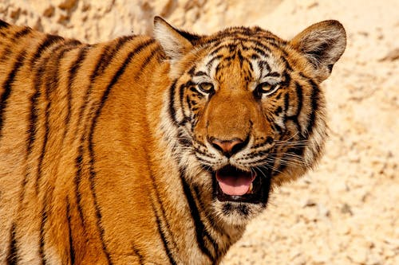
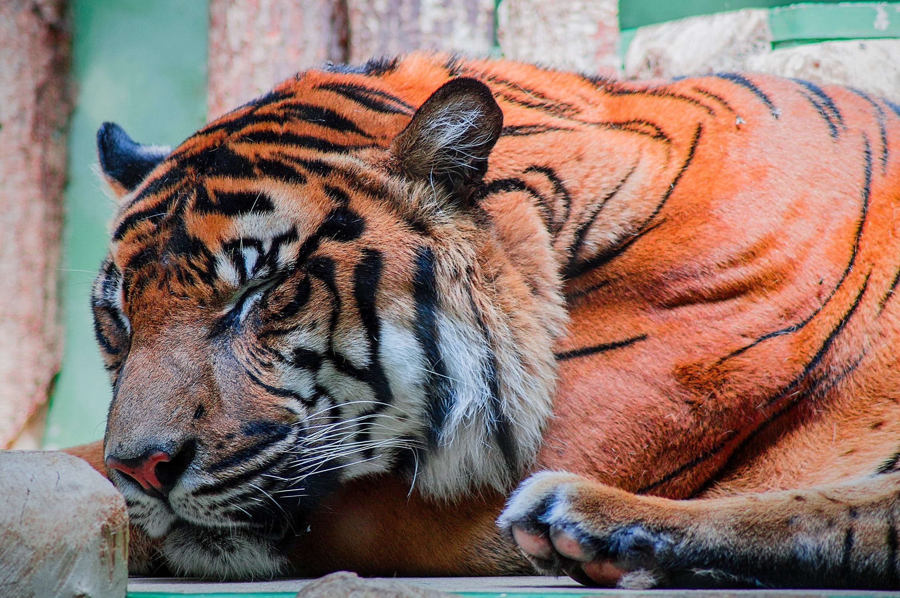

Bengal Tiger As Specie
Bengal tigers are magnificent and unusual, and are one of the most
wondrous and legendary creatures to walk the Earth. They are also
one of the world's largest cat species. Bengals are larger than
other tiger species on average, but the largest tiger ever
recorded was a Siberian. As a result, Bengals are the second
largest tiger breed. Wild Bengal tigers can now be found only in
Bangladesh India, and Nepal. And, despite the fact that there are
more Bengals than any other tiger subspecies on the Indian
subcontinent, their numbers are in decline. Male tigers are
typically 9 to 10 feet long, including the tail, and 3 to 3.5 feet
tall from the ground. Boy Bengals weigh between 397 and 569 pounds
on average, which is around the same as a pig and half the weight
of a polar bear! Females are marginally taller than males. They're
normally about 7.5 and 8.5 feet tall, and although they're the
same height as males, they only weigh between 220 to 350 pounds,
making them about the size of a reindeer. Bengal tigers are
typically significantly bigger than other tiger species.


Bengal Tiger Behavior
Bengal Tigers are solitary, and use their ferocity to fiercely
scent-mark vast areas and drive away their rivals. They are
formidable nocturnal hunters who cover great distances in search
of buffalo, deer, wild pigs, and other larger animals. Tigers
conceal themselves in their conspicuous jackets (no two have the
same stripes). They wait and crawl close enough to their prey to
strike with a fast spring and a lethal pounce. A hungry tiger can
consume up to 60 pounds in a single night, but they usually
consume less. Despite their intimidating reputation, the majority
of tigers resist humans; nevertheless, a few do grow into
aggressive maneaters. These species are often ill and unable to
hunt properly, or they survive in areas devoid of their
traditional prey. Females have babies of 2 to 6 cubs, which they
rear independently of the male. Cubs are not able to hunt until
they reach the age of 18 months and live alongside their mothers
for 2 - 3 years before dispersing to establish their own
territories.